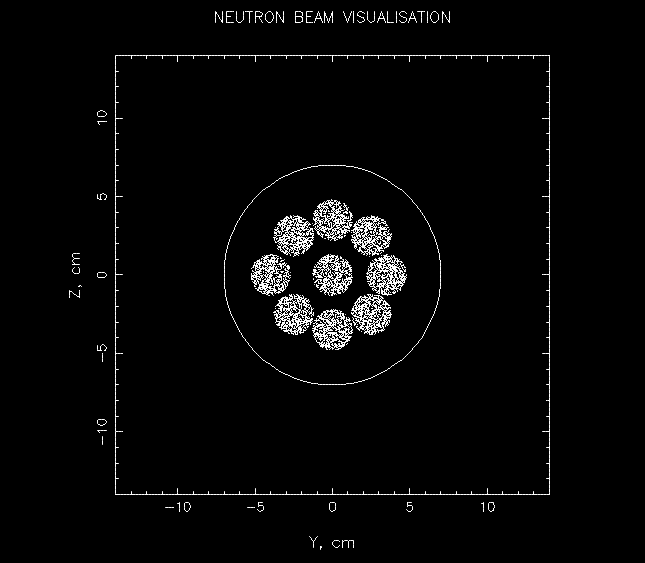
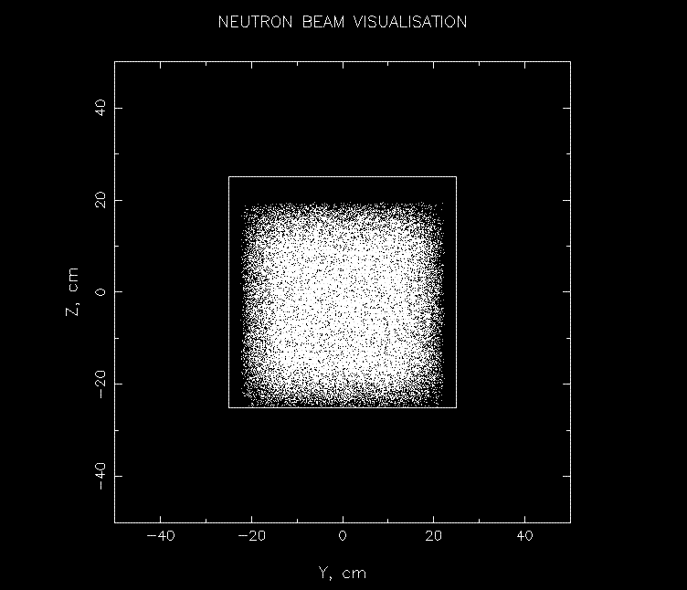
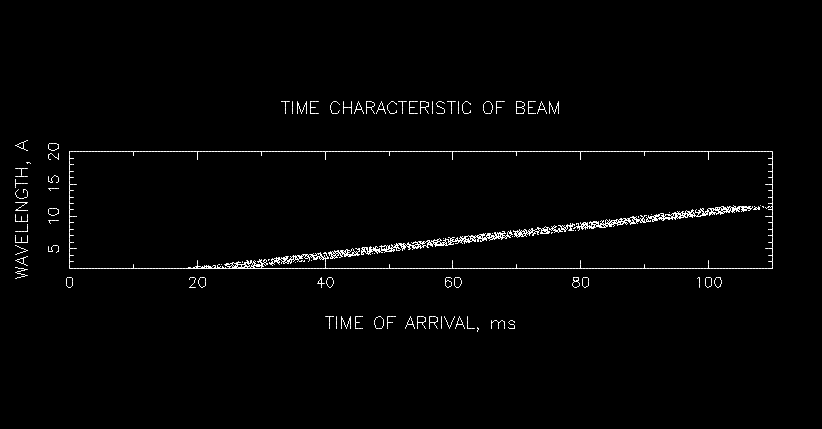

VITESS Module Visual (Unix, Linux)
Visulalisation via PGPLOT GRAPHIC LIBRARY
The aim of this module is to visualize the neutron beam DURING simulation.
This module does not disturbe the normal processing of the pipe. There are four
options of visualization:
1 - circular beam YZ ,
2 - rectangular beam YZ,
3 - visualise time of arrival(wavelength),
4 - visualise wavelength(time of arrival).
Visualization during the simulation can be very useful for the understanding
of the instrument and the checking of the instrument configuration. The third
and fourth types of visualization is useful for study frame overlap effect.
For first and second type of visualization you may choose visualization at
all wavelenghts (default) or at defined wavelenght range. Further, the module
calculates the center position of the neutron beam, and average time of flight
for option 1 and 2 of visualization. For options 3 and 4 it only calculates
the average time of flight. Only first 10000 trajectories will be printed.
Examples
An example of circular beam YZ visualization of multiple-hole collimator
is given:

An example of rectangular beam YZ visualization of space + rectangle window
is given further. It shows that the effect of gravity can be significant.
The beam is shifted down:

The example of visualization beam characteristic for system CWS-source
plus guide can be seen here:

Options:
-R type of visualization; range: 1 or 2 or 3 or 4 -r radius of circle, which
will appear, range: > 0; -y Y coordinate of the centre of the circle; -z
Z coordinate of the centre of the circle; -m minimal value of wavelength;
-M maximal value of wavelength; -t minimal value of time of flight; -T maximal
value of time of flight.
Next options describe rectangular windows: -h bottom of window (z-coordinate);
-H top of window (z-coordinate); -w left side of window (y-coordinate); -W
right side of window (y-coordinate); -k this option is only active in the
first and the second type of visualization, 0 - visualization of all wavelenghts
(default), 1 - visualization of neutrons within the given wavelength range
You can choose a visual output device by option -o: value 1 - output to display,
value 2 - output to file, value 3 - output to file and to display too
Back to VITESS overview
vitess@helmholtz-berlin.de